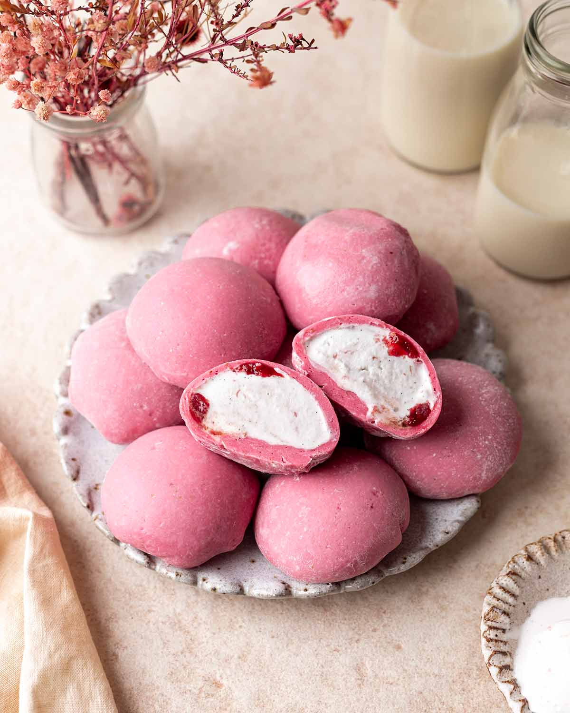

MyResipi
Resepi Mochi Guna 5 Bahan, Tak Payah Kukus Tetap Lembut Jadinya
23 Okt 2025
Aidasdibjaefc

RESEPI MOCHI
Bahan-bahan:
1 kampit tepung pulut (500g, boleh kurangkan kalau tak nak buat banyak)
1/2 cawan tepung gandum
Air